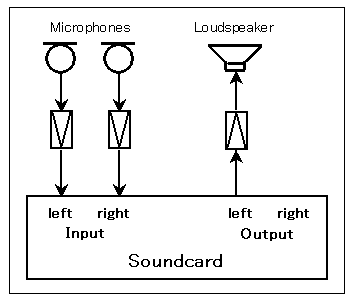

DSSF3 > RA > Impulse response > Measurement guide
Connecting devices
Connect the microphones and loudspeaker to the Input and the Output of your soundcard as shown in the figure below. The binaural impulse responses can be measured if you use a pair of two microphones, but the monaural impulse responses can be measured by only one microphone. Remember to connect the loudspeaker to the left channel, because the measurement signal is outputted to the left channel.

DSSF3 > RA > Impulse response > Measurement guide